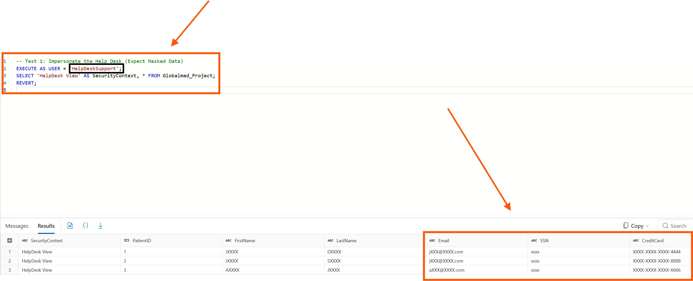

Azure SQL Dynamic Data Masking PoC
A GlobalMed proof of concept showing how Azure SQL can reduce accidental exposure of PII, PHI, and payment data through role-aware masking and tightly controlled `UNMASK` access.
- Azure SQL
- Dynamic Data Masking
- Least Privilege
- Audit Evidence

CISO Value
This project is stronger when it reads like a security-control story instead of a screenshot gallery. The goal is to show that you can translate privacy risk into implementation, testing, evidence, and executive-ready recommendations.
What I Built
I designed a database-level masking model that protects sensitive healthcare records by default, then validated how query results change under different execution contexts.
Control Design
Applied native Azure SQL masking functions to names, email addresses, SSNs, and card data so sensitive fields are protected at the database layer.
Access Model
Separated routine operational users from privileged compliance reviewers, with `UNMASK` reserved for a high-trust role.
Validation
Compared masked and unmasked query output to prove that the same underlying records render differently based on role context.
Business Outcome
Reduced unnecessary data exposure while preserving legitimate workflows for support, billing, clinical, and compliance teams.
Control Mapping
A CISO will want to see the relationship between data type, masking behavior, access need, and evidence. This table makes that logic clear.
| Data Class | Masking Rule | Risk Reduced | Privileged Access |
|---|---|---|---|
| Patient names | Partial masking for non-privileged users | Reduces casual exposure during operational support and analytics review. | Visible only where role context requires identity validation. |
| Email addresses | Azure SQL `email()` masking function | Protects contact details from broad internal visibility. | Unmasked for approved compliance or investigation workflows. |
| SSN / national identifier | Default string masking | Limits high-impact identity exposure from routine database reads. | Restricted to explicitly authorized privacy/compliance review. |
| Payment card | Partial masking with last-four visibility | Supports billing verification without exposing full card values. | Full value access requires a documented privileged use case. |
Validation Evidence
The screenshots demonstrate the control in action: routine access sees masked values, while the authorized compliance role can view unmasked records for legitimate review.


Control Boundaries
The page is more credible when it explains where DDM fits and where it does not. This shows mature judgment, not just tool familiarity.
Good Fit
Reducing accidental exposure of sensitive fields in query results for users who do not need full values.
Not Enough Alone
DDM is not encryption, data loss prevention, or row-level security. It should complement stronger data controls.
Privilege Governance
`UNMASK` should be approved, time-bound where possible, monitored, and reviewed during access recertification.
Audit Readiness
Evidence should include masking configuration, role assignments, query results, and privileged-access review notes.
Interactive Role Simulator
The simulator shows how the same dataset changes when a user executes a query under different enterprise roles.
Masking Decision Challenge
A small least-privilege game: decide whether each request should stay masked or receive privileged `UNMASK` access.
HelpDesk Support
Troubleshoot a login issue and asks for full patient identifiers.